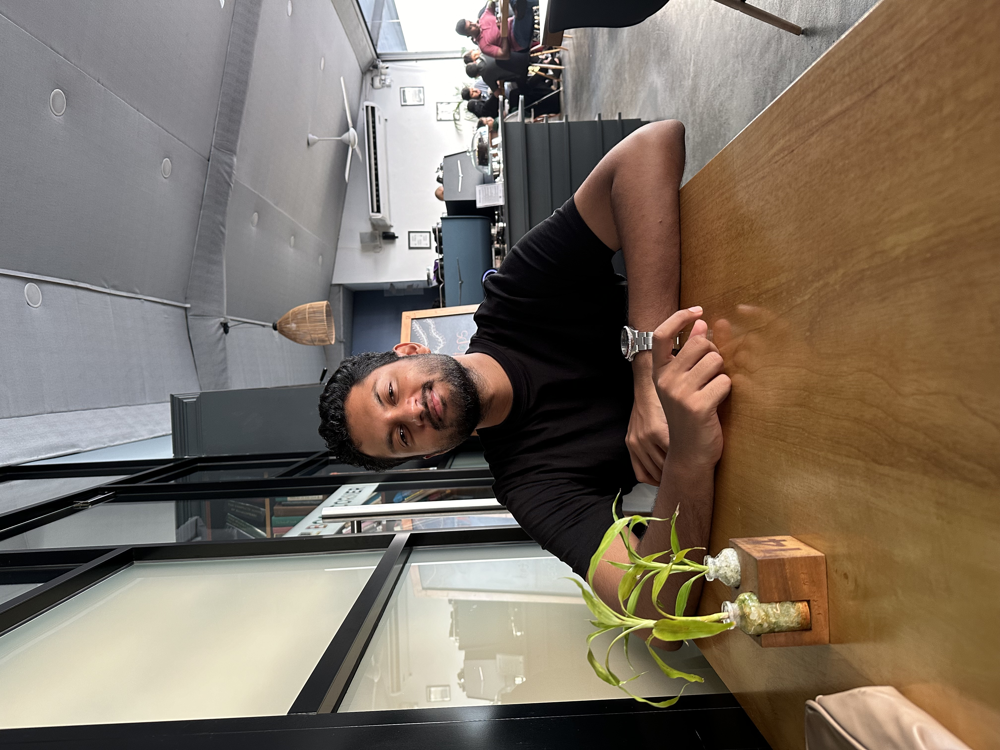

Always building something.
By day I lead AI & analytics delivery at Octave, the data and analytics arm of JKH - Sri Lanka's largest conglomerate. Outside of that, you'll find me here - shipping products, documenting what I learn, and staying hands-on in a space that rewrites the rules every other week. Based in Colombo 🇱🇰.

Notes from the edge of what I know - AI workflows, building in public, and the gap between reading about something and actually doing it.
Products, tools, and experiments built from curiosity, frustration, and the urge to see an idea become real.
Whether you're navigating AI adoption, looking for someone to run a workshop, or just want to think through something together - there's probably a way I can help.
Talks and workshops for students and professionals on how AI is actually changing the way we work - grounded in what's happening right now, not what sounds good on a slide.
Informal café gatherings for builders and AI enthusiasts in Colombo - a space to share what you're working on, swap ideas, and meet people who are into the same stuff.
Tell me what you're trying to build or fix with AI. I read everything and reply to most.